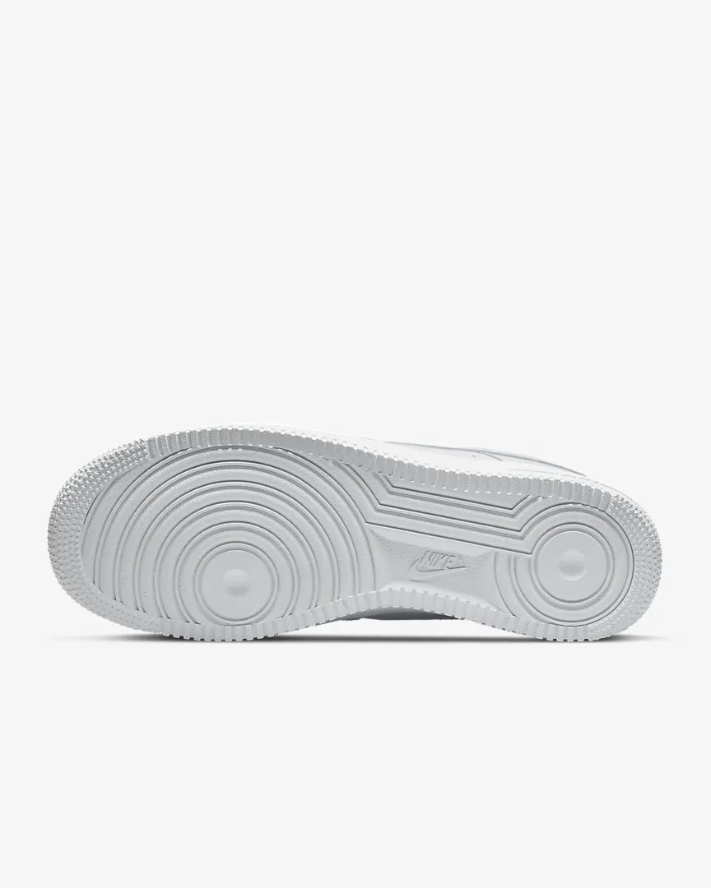
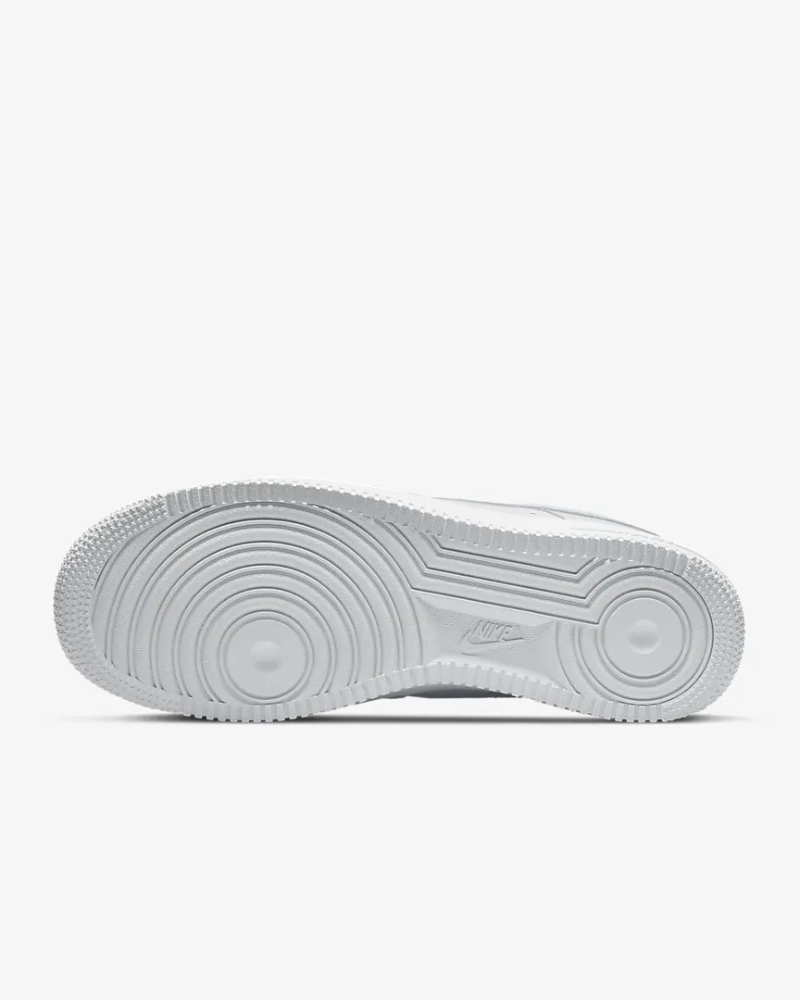

NIKE BLAZER '88
Recollida gratuïta Buscar una botigada
A l'estil dels anys 70. Aclamades als 80. Un clàssic dels 90. Llistes per al futur. Les Nike Blazer Mid '77 ofereixen un disseny atemporal i molt còmode. La part superior de pell increïblement impecable combina perfectament amb un cridaner logotip retro i uns detalls davant exquisits per oferir una sensació premium. L'escuma exposada a la llengüeta i l'acabat de la mitjasola especial fan que sembli que han sortit dels llibres d'història. Endavant, perfecciona el teu look.
Color mostrado: Blanco/Sail/Peach/Negro
Model: CZ1055-100
109,99€
 
